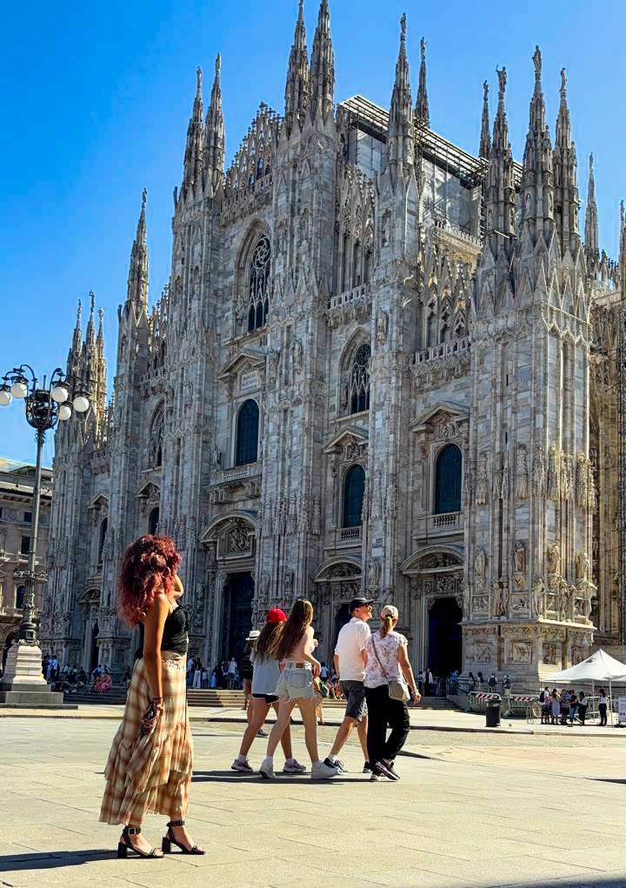
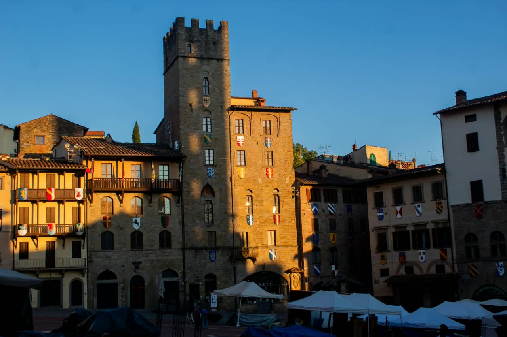

Tras la caída del Imperio romano de Occidente, Milán, al igual que el resto de Italia,
fue ocupada por hérulos y ostrogodos.Durante el siglo XV,
el ducado de Milán fue gobernado por las familias Visconti (hasta 1447) y Sforza (a partir de 1450),
quienes mantenían a su servicio a artistas de la talla de Leonardo da Vinci y
Bramante.
Tras la Revolución francesa es ocupada por Napoleón. Posteriormente la
ciudad se convirtió en uno de los principales centros del nacionalismo italiano,
reclamando su independencia y la unificación italiana.
En 1859, Austria cedió su
control al Reino de Piamonte-Cerdeña,el cual dos años más tarde se convertiría
en el Reino de Italia.

Algunos lugares de interés de esta localidad son la Basílica de San Francisco con el ciclo de frescos Leyenda
de la cruz, de Piero della Francesca, la Catedral de Arezzo y la remodelación de Vasari de la
plaza mayor de Arezzo, aparte de otros monumentos medievales.
La película La vida es bella,
dirigida y protagonizada por Roberto Benigni, está rodada en esta ciudad.
Los gemelos de la serie de televisión The Suite Life on Deck, Dylan y Cole Sprouse, nacieron en Arezzo